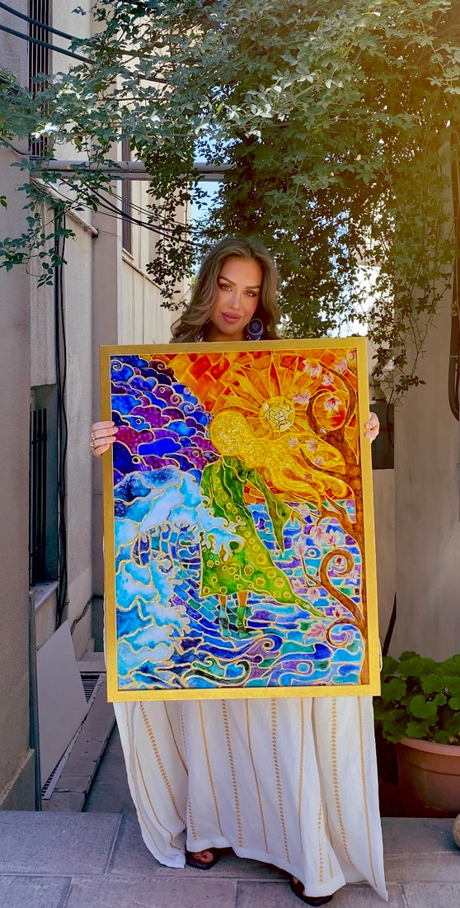

I am Caroline.
Artist, mother, wanderer of the world.

My life has been a tapestry woven from places far and near, each thread dyed in the colors of experience, each knot a story.
Now, I live in Iran, where the air carries the scent of rosewater and saffron, and the light falls like silk over ancient walls.
I believe life itself is art — not only in the canvas and the brush, but in the way we walk through a garden, sip tea at sunrise, or let the wind play with our hair.
I live slowly, letting moments ripen, letting beauty seep in like pigment soaking into paper.
What shapes the work
Bold yet tender.
The language of the feminine, of rivers, of breath.
The original artist, forever my teacher.
The art of living inside a body that feels and creates.
Motherhood has deepened this practice. My son is my little companion in all things — painting alongside me, wandering markets, listening to the hum of distant prayers. He is part of the brushstroke, part of the palette.
Each piece I create is not just an image, but a fragment of this life — the warmth of a Persian courtyard, the hush of a twilight garden, the curve of a wave or a shoulder.
I offer them as invitations to those who wish to live more beautifully, more slowly, more fully — to those who know art is not only what you see, but what you feel.